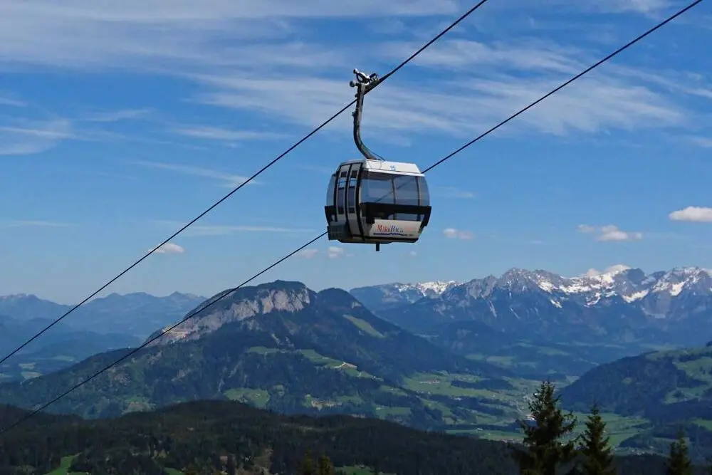
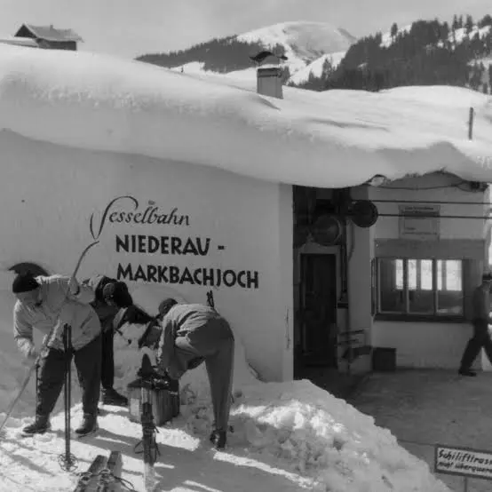
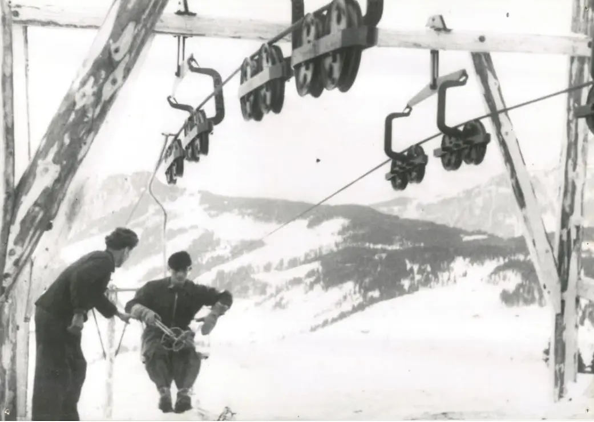
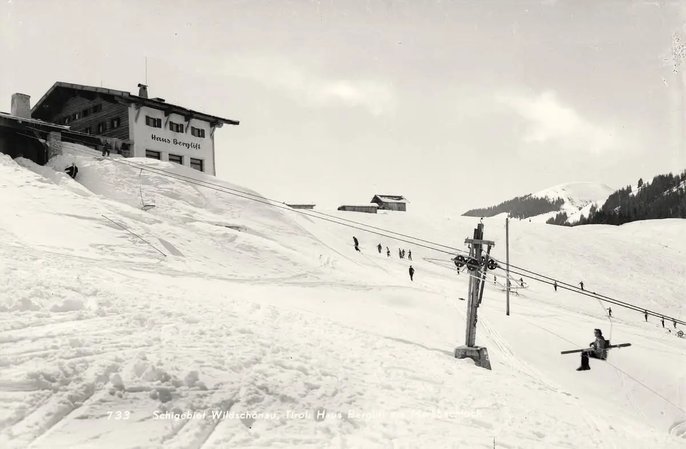
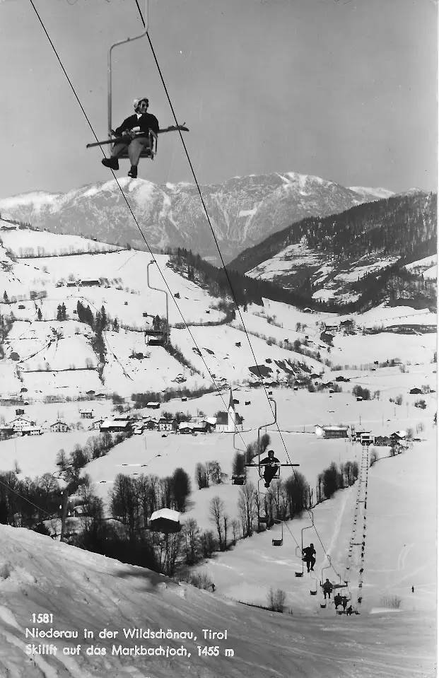
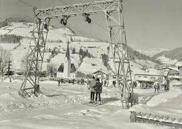
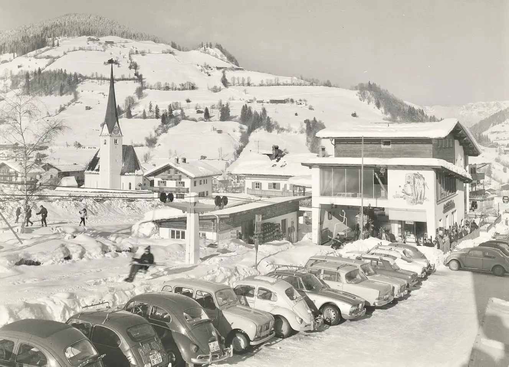
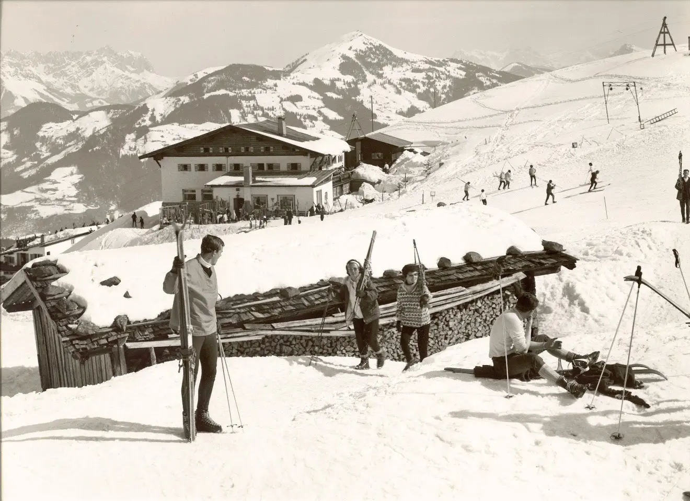
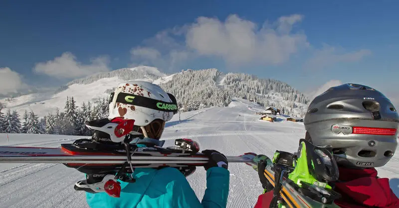
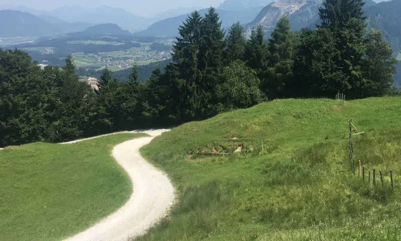

Rübezahl-Hütte
Panoramiczna gospoda górska z dużym tarasem słonecznym, blisko górnej stacji. Dojedziesz tam gondolą. Według źródeł turystycznych w niedziele często gra tu na żywo muzyka ludowa.
Ta strona jest tłumaczeniem maszynowym oryginału (niderlandzkiego, angielskiego lub niemieckiego) i nie została sprawdzona przez native speakera. W razie wątpliwości obowiązuje wersja oryginalna.
Wyciąg górski w Niederau
Widać ją z wioski: Markbachjoch, góra, na której w 1947 roku stanął pierwszy w Tyrolu wyciąg krzesełkowy. Do dziś to wizytówka Niederau, zimą dla narciarzy, latem dla piechurów, rodzin i paralotniarzy.
Wyciągi
Markbachjochbahn rusza z krawędzi Niederau i w około sześć minut wwozi na Markbachjoch. To gondola z ośmioosobowymi kabinami, zbudowana przez firmę Doppelmayr w 1995 roku. Według skiresort.info może przewieźć około 1 200 osób na godzinę.
Na górze ośrodek łączy się z siecią wyciągów i tras Ski Juwel Alpbachtal Wildschönau. Po drugiej stronie wsi leży Lanerköpfl, druga, nieco spokojniejsza część ośrodka narciarskiego Niederau. Przy górnej stacji zapowiedziano zadaszony taśmociąg dla narciarzy; aktualny stan sprawdź u Wildschönauer Bergbahnen.

Schroniska i restauracje
Wokół Markbachjoch jest kilka miejsc na postój. Godziny otwarcia zależą od sezonu; przed wyjściem zadzwoń lub sprawdź stronę internetową.
Panoramiczna gospoda górska z dużym tarasem słonecznym, blisko górnej stacji. Dojedziesz tam gondolą. Według źródeł turystycznych w niedziele często gra tu na żywo muzyka ludowa.
Schronisko alpejskie na Markbachjoch, dobre dla rodzin: jest plac zabaw i małe zoo z kontaktem ze zwierzętami, a przy dobrej pogodzie także hamaki do odpoczynku.
Bar przekąskowy przy dolnej stacji Markbachjochbahn: wygodny na przekąskę lub drinka przed przejazdem albo po nim, zwłaszcza po całym dniu na stoku.
Przytulne schronisko alpejskie na wysokości około 1 360 metrów, mniej więcej pół godziny spacerem od górnej stacji. Podaje tyrolskie dania i domowe ciasto. Dobre miejsca na postój są też wokół Lanerköpfl, na przykład Holzalm.
Historia
Wszystko zaczęło się po wojnie. W 1946 roku inżynier Sepp Hochmuth, z wykształcenia ślusarz-mechanik, zaczął budować wyciąg krzesełkowy z Niederau na Markbachjoch. Był to prawdziwy projekt zrób to sam: według tradycji na siedzenia poszły cienkie drewniane deski, druty i rury wodociągowe, a napęd zapewniał stary parowóz.
Wyciąg otwarto 14 stycznia 1947 roku. Dał dolinie pierwszy wyciąg górski i zapoczątkował turystykę zimową w Wildschönau. Kto dziś wsiada do gondoli, nadal jedzie śladem tamtego pierwszego wyciągu.







Stare zdjęcia i pocztówki z grupy na Facebooku ‘Kufstein in alten Bildern’.
Lato i zima

Szerokie, słoneczne stoki nad wioską, odpowiednie dla początkujących, rodzin i spokojnej jazdy. Do Niederau można zjechać na nartach. Na stokach północnych są bardziej strome trasy, na przykład trasa Hochberg. Dla najmłodszych przy wiosce są stoki do ćwiczeń; o aktualny stan wyciągu szkoleniowego warto zapytać na miejscu.

Dzięki gondoli można pominąć podejście i od razu ruszyć na górskie hale. Popularne szlaki prowadzą na Rosskopf przez Halsgatterl albo na Feldalphorn, a spokojniejsza ścieżka wzdłuż skraju lasu wiedzie do Penningdörfl, z widokiem na Hohe Salve i Wilder Kaiser. Markbachjoch to także znane miejsce startu paralotniarzy; strefa startowa leży poniżej schroniska. Rodziny znajdą przy schronisku plac zabaw i zwierzęta.
Pytania
Ośmioosobowa gondola z Niederau na Markbachjoch jedzie około sześciu minut. Stary wyciąg krzesełkowy potrzebował na to około osiemnastu minut.
Tak. Gondola kursuje również w sezonie letnim i wwozi piechurów, rodziny oraz paralotniarzy. Początek i koniec sezonu oraz godziny kursowania zmieniają się z roku na rok; aktualne godziny sprawdź u Wildschönauer Bergbahnen.
W pobliżu górnej stacji znajdziesz Rübezahl-Hütte i Markbachjochalm; Schnapshütte stoi przy dolnej stacji. Kawałek dalej spacerem leży Norderbergalm. Godziny otwarcia zmieniają się zależnie od sezonu, więc sprawdź je wcześniej.
Tutaj 14 stycznia 1947 roku otwarto pierwszy w Tyrolu wyciąg krzesełkowy, zbudowany przez inżyniera Seppa Hochmutha. W 1995 roku zastąpiła go ośmioosobowa gondola.
Uwaga: godziny, ceny i terminy sezonu się zmieniają. Zawsze sprawdzaj je u Wildschönauer Bergbahnen i w samych schroniskach. Źródła danych historycznych i technicznych: Wildschönau Tourismus, skiresort.info oraz strona Ski Juwel.